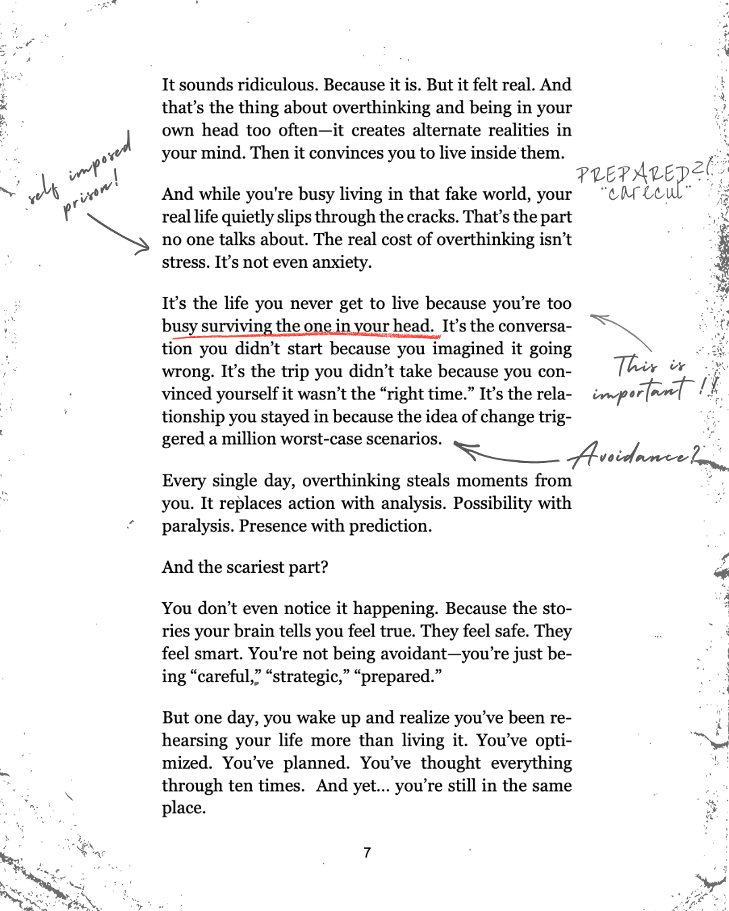
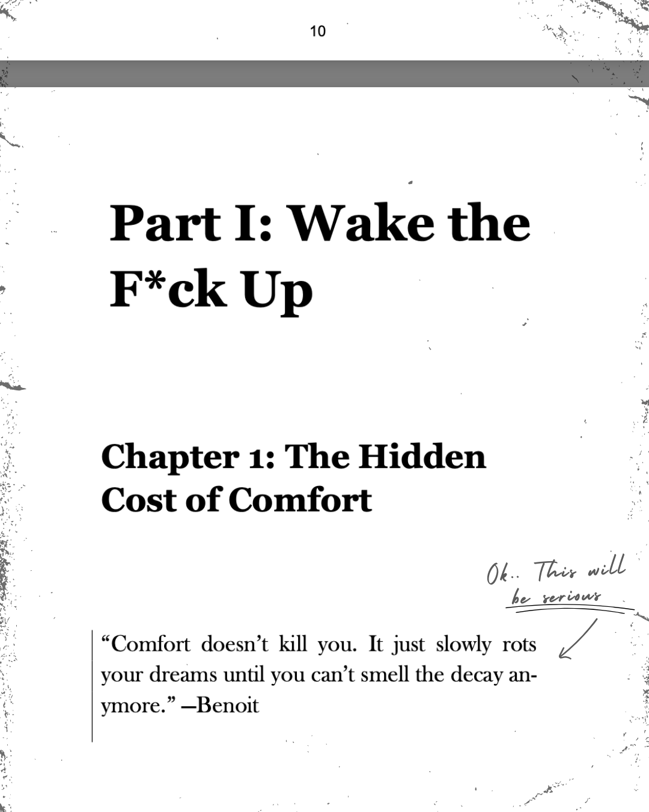

The Manuscript
You Weren't
Supposed to Find
A psychologist once said something he probably shouldn't have:
"If people understood what's in that manuscript, most of them wouldn't need me anymore."
He didn't say it with pride. He said it with a kind of reverence. Like he knew the information in it was too sharp, too honest, too exposing.
Someone at the table asked him what made it so different.
He replied:
"Most books tell you how to feel better. This one shows you how your mind actually works. And once you see that, you can't hide from yourself anymore."
He explained that most people like the idea of clarity. They like the idea of confidence. They like the idea of change.
But the one thing they fear most is seeing their own patterns clearly.
Because once you see them, you can't blame anything else.
That's what this manuscript does. It cuts through the stories you tell yourself, the excuses, the versions of "you" you've performed for years.
Someone at the table whispered, "Where do you even get something like that?"
He stared for a moment, then said quietly:
"It's not a bookstore book. The published version isn't the same. This is the raw one. The one that explains fear, identity, loops, the architecture of the mind. It's the one I give people when nothing else works."
He paused again.
"Read it slowly. It has a way of changing you before you notice it happening."

This isn't a book.
It's a blueprint.
The blueprint you're not supposed to read unless you want your life turned upside down.
Inside is the stuff that never makes it into therapy rooms or self-help shelves:
- how your brain predicts danger even when life is fine
- how your identity was engineered without your permission
- how you mistake fear for responsibility
- how your childhood stories became your adult choices
- how you stay loyal to pain that isn't yours
- how your mind hides the truth from you
- how every "block" you have follows the same pattern
It's dangerous because it doesn't let you stay unconscious.
Once you understand the mechanics of your mind, you can't unsee them. You can't unknow them. And you can't keep living the same life.
This is why people say it's "dangerous." Not because it harms you, but because it removes the one thing making you miserable:
your illusions.
Why this is spreading online
(and nowhere else)
The commercial world wants comfort. Bookstores want categories. Therapists want clients.
This manuscript wants none of that.
There is a published version. It's been edited, softened, made fit for a shelf. This is not that version. This is the original. The raw one. The one written before anyone told it to be more palatable.
It exists here, in digital form, because people pass it to each other quietly, to the ones who are ready for it.
That's why people whisper about it. That's why you're here reading this.
What you'll recognize immediatelyYou won't be reading it.
You'll be recognizing yourself.
Not passively. Clinically. Almost uncomfortably.
You'll finally understand:
- why your mind goes quiet in public but loud when you're alone
- why you overanalyze the people you care about
- why decisions feel heavier than they should
- why you keep repeating patterns you promised you wouldn't
- why you freeze even when you know the right move
- why you feel misaligned even when your life looks fine
- why your thinking feels like a loop instead of a line
It won't feel like advice. It will feel like someone turned the lights on inside your head.
And once you see it, you can't go back to how you used to operate.
Who wrote thisA former CEO who burned out
so hard he walked away from
the business he built.
What followed was two years of obsession. Neuroscience. Identity research. Emotional pattern mapping. The brutal work of rebuilding a mind from the inside out.
Part researcher. Part survivor. Part mad scientist.
This manuscript is what emerged from the rubble.
If you're still reading, you already know something.
You're not here for entertainment. You're here because your mind is tired of running in circles.
Most people scroll past things like this. They tell themselves "later." But later is the prison.
What you feel right now, that pull, that pressure in the chest, that's the part of you that's done being unconscious.
If you want to understand yourself at a level most people never reach, this is where you step through.
But before I give you
the full map…
I need to see if you can handle Chapter 1 first.
Not because it's dramatic. Because most people aren't ready to see the truth laid out this plainly.

Chapter 1 is the moment the manuscript stops being interesting and starts becoming personal.
Most people say they felt exposed reading it. Not judged. Just finally seen.
If you felt something when you read the pages above, that little sting in your chest, that wasn't discomfort.
That was recognition. That was your mind whispering: "this is about me."
Read Chapter 1.
The Hidden Cost of Comfort.
Sent instantly. You'll also be added to The Second Life, a private letter for the ones who don't look away.
Read it slowly.
It has a way of changing you before you notice it happening.